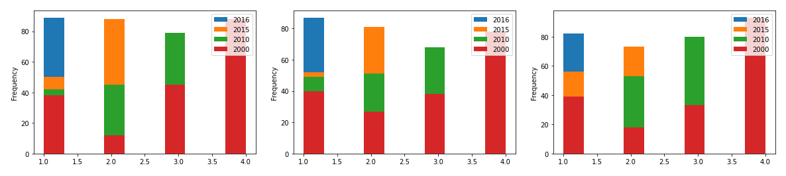
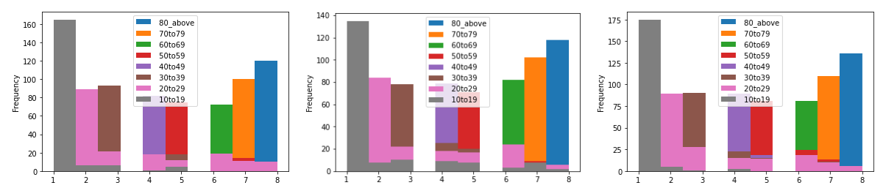
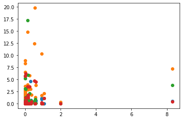
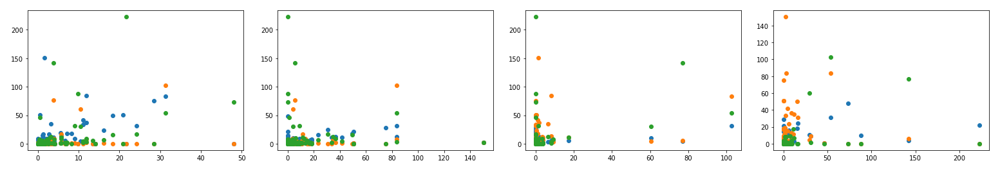

Data Analysis

Data sets usually contain many crucial hidden patterns that need to be recognized. To discover the unexpected trends in data, analyzing and taking a scientific approach is the key. With data analysis, we can generate some statistics and get several relevant insights based on the data. This essential information will help us to decide the suitable conclusions and plan creative solutions. In fact, the goal is to turn data into business decisions.
To fulfill my curiosity and widen my knowledge about the importance of data analysis, I searched a raw dataset from kaggle.com https://www.kaggle.com/twinkle0705/mental-health-and-suicide-rates?select=Human+Resources.csv and started to explore it by Jupiter Notebook. Overall, the source above consist of several data related to suicide rates of age groups in different countries along with Health Facility.
What Can We Learn From The Data and How Can It Be Used?
According to the files attached, several data can be gathered, such as :
- Age-standardized suicide rates for different years
- Suicide rates from different age groups
- Facilities mental health-related that were available
- Human resources mental health-related that were available
From these data, the relation between the factors of suicide rates, such as age, gender, facilities, and human resources, can be known. Therefore, the solution to decrease numbers of suicide rates can be decided. In order to know the correlation between one aspect and another factor, the diagram can be used to help.
Identify The Correlation Between Suicide Rates in Particular Year and Gender
After grouping and filtering the data frame, we can rank the rates of suicide rates for every country between four different years based on gender. With these methods, we can discover which year has the most country reaching a peak of suicide rate. Therefore, according to the visualization and calculation, we can conclude that 2000 has the highest rates for suicide, and 2016 has the lowest rates for all gender, either both sexes, males only, or females only.
Besides, we can also point out the most and least dominant countries in 2016. With finding the minimum and maximum value, several conclusion can be decided:
- Guyana has the highest suicide rate for both sexes, and Barbados has the lowest rate
- Russian Federation has the highest suicide rate for males only, and 'Antigua and Barbuda' has the lowest rate
- Lesotho has the highest suicide rate for females only, and Barbados has the lowest rate.
Identify The Correlation Between Suicide Rates of Particular Gender and Age
Not only gender, but we can also identify the correlation between suicide rates and age. Same with the previous methods, after grouping and filtering the data frame, we can rank the rates of suicide rates for every country between gender based on the range of ages. Hence, we can discover which age group has the most country reaching a peak of suicide rate. Therefore, according to the visualization and calculation, we can conclude that for all gender, either both sexes, males only, or females only, age 80 above has the highest rates of suicide, and 10 to 19 has the lowest rates.
Case - Should We Increase The Number of Certain Facilities to Decrease The Suicide Rates?
From the conclusion that has been decided earlier about the most and least dominant countries in 2016, we can analyze it more deeply. To be precise, we want to identify the correlation between the rates and facilities based on the most and least dominant countries. According to the visualization and calculation, 'Antigua and Barbuda', which has the lowest rate of suicide for males, has a higher rank in facilities, precisely Hospital, than Guyana, which has the highest suicide rate for both sexes. Therefore, increasing the number of facilities could be one of the solutions.
However, there is no further facility data related to other dominant countries, such as Russian Federation, Lesotho, and Barbados. Moreover, 'Antigua and Barbuda' has only one data, which is merely related to mental hospitals. Therefore, we can't conclude that this pattern always happens.
Case - Should We Improve The Human Resources to Decrease The Suicide Rates?
Similar to the facility data analysis, we also want to identify the correlation between the rates and human resources based on the most and least dominant countries. According to the visualization and calculation, 'Antigua and Barbuda', which has the lowest rate of suicide for males, has a higher rank in Social Workers than Guyana, which has the highest suicide rate for both sexes. Therefore, improving human resources could be one of the solutions.
Nevertheless, since there is no human resources data related to other dominant countries such as Russian Federation, Lesotho, and Barbados, we can't conclude that this pattern always happens.